Partner stress is consistently identified as one of the strongest modifiable risk factors for postpartum depressive symptoms (PDS), yet what reduces its impact at the population level remains largely unknown. This study introduces Pre-Conception Health Engagement (PCHE), a composite measure of how actively women in a given state pursue health-promoting behaviors before and around the time of conception, and tests whether PCHE weakens the link between partner stress and PDS across states. Using publicly available CDC surveillance data (PRAMStat) from 2000 to 2011, covering 180 state-year observations across 35 U.S. jurisdictions, we built a 7-component PCHE score from indicators available for all observations, drawing on behaviors such as pre-pregnancy vitamin use, pregnancy planning, breastfeeding, and infant health care engagement. The measure demonstrated strong internal reliability (Cronbach’s α = .87) and a dominant single factor (63% variance explained). States with higher PCHE scores showed a weaker relationship between partner stress and PDS in models with state and year fixed effects (interaction β = −0.46 to −0.50, p = .011–.021), and this pattern held when the index was limited to behaviors occurring strictly before pregnancy (β = −0.41). Cluster-aware inference was more equivocal (permutation p = .18, wild cluster bootstrap p = .19), reflecting limited power with 35 clusters. The moderation was not driven by pregnancy intentionality alone (effect persisted without it, β = −0.31) and was not reducible to socioeconomic advantage (survived adjustment for 18 financial, social, and stability controls). Prenatal counseling intensity showed the opposite pattern—states with more counseling had a stronger partner-stress-to-PDS link—consistent with confounding by indication rather than protective buffering. These ecological findings suggest that upstream preconception health engagement, rather than downstream counseling, may be associated with attenuated population-level impact of partner stress on postpartum depressive symptoms.
Keywords: postpartum depressive symptoms, pre-conception health, ecological analysis, partner stress, PRAMS, moderation
Postpartum depressive symptoms are among the most common and consequential complications of childbirth. Affecting approximately 13% of women in the months following delivery, PDS exact a devastating toll on maternal well-being, infant development, family functioning, and public health systems (Bauman et al., 2020). Luca and colleagues (2020) estimated that untreated perinatal mood and anxiety disorders cost the United States $14.2 billion annually among 2017 births alone, a figure that encompasses direct health care expenditures, productivity losses, and the long-term developmental costs borne by children of affected mothers. Despite decades of research identifying risk factors and developing interventions, postpartum depressive symptom prevalence has remained stubbornly stable, suggesting that the field’s dominant approach—identifying at-risk individuals and intervening during or after pregnancy—may be insufficient to shift population-level outcomes.
Among the constellation of risk factors linked to PDS, relationship distress and partner-related stress have emerged as consistently among the strongest and most robust predictors. Beck’s (2001) foundational meta-analysis identified poor marital relationship quality as a significant predictor of postpartum depression, and Robertson and colleagues (2004) confirmed this in their synthesis of antenatal risk factors, finding that marital difficulties and lack of partner support ranked among the largest effect sizes in the literature. More recent evidence has only strengthened this conclusion. Gastaldon et al. (2022), in a comprehensive umbrella review synthesizing decades of meta-analytic evidence, identified partner-related stressors as a leading risk domain, with intimate partner violence and relationship conflict demonstrating particularly strong associations with postpartum depressive symptomatology. At the state level, Qobadi and Collier (2016) analyzed Mississippi PRAMS data and found that partner-related stressors were associated with odds ratios ranging from 5.9 to 8.6 for PDS, depending on the specific type of stressor, eclipsing the effect sizes of financial hardship, housing instability, and other commonly studied psychosocial risks.
The dominance of partner stress as a risk factor for postpartum depressive symptoms raises a critical question: If partner stress is the most potent modifiable predictor, what—if anything—moderates its impact? That is, are there contexts, conditions, or behavioral patterns that attenuate the link between partner stress and depression after childbirth? Surprisingly, this question has received almost no systematic attention in the literature. The vast majority of research on protective factors has examined individual-level behaviors in isolation from one another and without consideration of their potential moderating role. Physical exercise during pregnancy has been associated with reduced depressive symptoms through anti-inflammatory pathways and hypothalamic-pituitary-adrenal axis regulation (Lancaster et al., 2010). Multivitamin and folate supplementation before and during pregnancy have demonstrated modest protective associations in several cohort studies. Planned pregnancies are consistently linked to lower PDS risk compared with unintended pregnancies, with Abbasi and colleagues (2013) documenting significantly elevated depression among women with unwanted pregnancies. Breastfeeding engagement has been associated with improved maternal mood through oxytocin-mediated bonding and stress-buffering pathways. Yet none of these factors has been studied as a component of an integrated preconception health profile, and none has been examined as a moderator of partner stress. This is a remarkable gap. If a woman who takes prenatal vitamins, plans her pregnancy, and engages actively with infant health care experiences partner stress, does she fare differently than a woman who does none of these things? The question is intuitive, clinically important, and entirely unanswered.
A related body of evidence underscores the preconception origins of perinatal mental health vulnerability. Patton and colleagues (2015) followed a community cohort prospectively from adolescence through childbearing and found that 81% of women who experienced perinatal depression had documented mental health difficulties before conception. Thomson et al. (2020), drawing on the same Victorian Intergenerational Health Cohort Study (VIHCS), extended these findings to show that 87% of perinatal depressive episodes had identifiable antecedents in the preconception period, with health behaviors and psychosocial functioning in the years before pregnancy powerfully predicting postpartum outcomes. These findings suggest that the roots of PDS extend far upstream of pregnancy itself, and that interventions confined to the prenatal or postpartum periods may arrive too late to meaningfully alter trajectories that were established months or years before conception.
Despite the strength of this evidence base, a striking methodological gap persists. Virtually all published research on postpartum depressive symptoms using Pregnancy Risk Assessment Monitoring System (PRAMS) data has relied on individual-level microdata, analyzing the characteristics of individual respondents within single states or across pooled individual records. This is the natural and appropriate approach for most research questions. However, it leaves entirely unexplored the ecological dimension of PDS risk—the degree to which state-level contextual factors shape population-level depressive symptom outcomes. The CDC’s PRAMStat system, which publishes aggregate prevalence estimates for hundreds of maternal and infant health indicators across participating states and years, offers a unique opportunity to examine these ecological patterns. To our knowledge, no published study has used PRAMStat aggregate data to study postpartum depressive symptoms, and no study has examined ecological moderation of any PDS risk factor. As Campos et al. (2021) observed in their review, “a combined analysis of indicators involved in postpartum depression is surprisingly non-existent” (p. 3), a gap that is especially conspicuous given the growing emphasis on social determinants and structural factors in maternal health research.
While prior multilevel studies have examined whether area-level characteristics moderate individual-level risk factors for PDS, no study has examined whether state-level preconception health engagement moderates the partner-stress-to-PDS pathway at the ecological level. Mukherjee et al. (2017) found that state-level women’s socioeconomic autonomy moderated the effect of antenatal stressors on postpartum depressive symptoms using individual-level PRAMS data in a multilevel framework. Onyewuenyi et al. (2023), in a study published in JAMA Network Open, found that neighborhood disadvantage interacted with race/ethnicity to predict PDS in a large cohort. These studies establish that ecological moderation of perinatal depression is a viable analytical approach, but they test structural and economic moderators using individual-level outcomes, whereas the present study tests a behavioral engagement moderator using aggregate outcomes. The contribution here is not the analytical framework but the construct and the data level.
The present study aims to address these gaps through four contributions that, in combination, represent a fundamentally novel approach to understanding postpartum depressive symptoms at the population level. First, we adopt the state-year as the unit of analysis, leveraging PRAMStat aggregate data to examine ecological patterns that are invisible in individual-level research. This ecological approach captures contextual and policy-related influences—the health infrastructure, cultural norms, and programmatic environments that characterize entire states—that cannot be decomposed from individual-level data alone. Second, we construct a theory-driven composite index, Pre-Conception Health Engagement (PCHE), that integrates multiple behavioral indicators into a single measure of the degree to which women in a given state engage in health-promoting behaviors before and around conception. Third, we test whether PCHE moderates the ecological association between partner stress and PDS, asking whether the population-level impact of partner stress on postpartum depressive symptom prevalence is attenuated in states where women exhibit higher levels of preconception health engagement. Fourth, we subject this moderation hypothesis to a comprehensive battery of robustness checks, including state and year fixed-effects models, cluster-robust standard errors, wild cluster bootstrap inference, cluster-aware permutation tests, leave-one-state-out and leave-one-component-out sensitivity analyses, domain sub-index decomposition, intentionality sensitivity analyses, socioeconomic control analyses, discriminant validity tests against structural access, and strict pre-conception variants that exclude all postpartum-period components.
Our specific research questions are as follows: (1) Can preconception health engagement be reliably measured as a composite construct at the ecological level? (2) Does PCHE moderate the association between partner stress and postpartum depressive symptom prevalence across state-year observations? (3) Is PCHE’s moderating effect distinct from structural access to health care and from socioeconomic advantage? (4) Does the moderating effect survive when analysis is restricted to strictly pre-conception components, thereby addressing temporal ordering concerns? We hypothesized that PCHE would demonstrate adequate internal consistency, that it would significantly moderate the partner-stress-to-PDS association (with higher PCHE attenuating the relationship), that this effect would be distinguishable from structural access and socioeconomic context, and that it would be robust to the exclusion of components measured during or after pregnancy.
In pursuing these questions, we deliberately choose to work at the ecological level—not because we believe ecological data are superior to individual-level data, but because they capture something different. When we observe that states with higher PCHE have a weaker partner-stress-to-PDS association, we are observing a contextual pattern that reflects the cumulative influence of health infrastructure, public health programming, cultural norms around health engagement, and the myriad policies and practices that shape women’s preconception health behaviors. These contextual influences are precisely what individual-level studies cannot capture, because they operate at a level above the individual. At the same time, ecological analyses cannot support individual-level causal inference, and we maintain this distinction throughout. What follows is, to our knowledge, the first attempt to construct and validate a composite preconception health engagement index at the state-year level and test it as an ecological moderator of the partner-stress-to-postpartum-depressive-symptom association.
Data were drawn from the Centers for Disease Control and Prevention’s Pregnancy Risk Assessment Monitoring System aggregate database (PRAMStat), which publishes state-level prevalence estimates for maternal and infant health indicators derived from the PRAMS survey. PRAMS is an ongoing, state-specific, population-based surveillance system that collects data on maternal attitudes, experiences, and behaviors before, during, and after pregnancy. Each participating state surveys a stratified random sample of women who have recently given birth, with response rates typically exceeding 65%. PRAMStat aggregates these individual responses into state-year prevalence estimates for each survey indicator, providing a publicly accessible panel of maternal health indicators across states and years.
Our analytic dataset was constructed from 6.4 million raw rows in the PRAMStat system, spanning the years 2000 through 2011, encompassing participating jurisdictions (states and territories) and 229 unique indicators. After data cleaning and harmonization, the analytic panel comprised 180 state-year observations across 35 jurisdictions for which both the harmonized PDS outcome and the primary PCHE index could be computed. The panel spans the years 2004 through 2011, with 97 observations from the 2004–2008 era and 83 from the 2009–2011 era. All data are publicly available through the CDC PRAMStat website, and all analytic code is available at https://github.com/Mathewmoslow/PRAMSv2.
The outcome variable was the state-year prevalence of self-reported postpartum depressive symptoms, harmonized across two PRAMS questionnaire items that were administered in different survey eras. QUO74, used from 2004 through 2008, assessed whether the respondent experienced depressive symptoms since delivery. QUO219, introduced in the revised 2009 questionnaire and used from 2009 through 2011, assessed a comparable construct using updated item wording. Both items capture self-reported postpartum depressive symptomatology, and both yield state-year prevalence estimates expressed as percentages. We harmonized these items into a single outcome variable, yielding 180 state-year observations with non-missing PDS data. The harmonized variable had a mean of 13.0% (SD = 3.0%), with values ranging from 6.9% to 27.6%.
| Variable | Era | n | M (%) | SD (%) | Range (%) |
|---|---|---|---|---|---|
| QUO74 (depressive symptoms since delivery) | 2004–2008 | 97 | 13.0 | 3.0 | 6.9–27.6 |
| QUO219 (depressive symptoms since delivery, revised) | 2009–2011 | 83 | 13.0 | 3.0 | 6.9–27.6 |
| Harmonized PDS (QUO74 + QUO219) | 2004–2011 | 180 | 13.0 | 3.0 | 6.9–27.6 |
Note. QUO219 takes precedence where both items are available for a state-year. All values are state-year prevalence estimates expressed as percentages. PDS = postpartum depressive symptoms.
Partner stress was operationalized using two primary indicators from the PRAMS survey. QUO197 assessed the prevalence of women reporting that their partner argued with them more than usual during the 12 months before delivery (M = 24.4%, SD = 3.4%, n = 180). QUO210 assessed the prevalence of women reporting any partner-related stressor during the same period (M = 29.5%, SD = 3.8%, n = 180). These two indicators were very highly correlated at the state-year level (r = .96), reflecting the substantial overlap in their constituent items but also providing partially independent tests of the partner stress construct. As secondary risk anchors, we examined QUO313 (prevalence of physical intimate partner violence) and QUO315 (prevalence of any intimate partner violence), which were available for a more restricted set of state-year observations due to later introduction of these items.
| Variable | Description | n | M (%) | SD (%) | Role |
|---|---|---|---|---|---|
| QUO197 | Partner argued more than usual, 12 months before delivery | 180 | 24.4 | 3.4 | Primary |
| QUO210 | Any partner-related stressor, 12 months before delivery | 180 | 29.5 | 3.8 | Primary |
| QUO313 | Physical intimate partner violence | — | — | — | Secondary |
| QUO315 | Any intimate partner violence | — | — | — | Secondary |
Note. QUO197 and QUO210 are correlated at r = .96. QUO313 and QUO315 were available for a restricted subset of state-year observations due to later introduction.
The PCHE index was constructed to capture the degree to which women in a given state engaged in health-promoting behaviors before and around conception. Seven component indicators were selected based on theoretical relevance to preconception health engagement, availability across all 180 analytic observations, and inter-item correlation structure. These indicators were organized into three conceptual domains: nutritional supplementation, pregnancy intentionality, and postpartum engagement.
Two indicators assessed pre-pregnancy vitamin use. QUO41 measured the prevalence of women who took a multivitamin or prenatal vitamin more than four times per week in the month before pregnancy (M = 37.4%). QUO65 measured the prevalence of women who took a daily multivitamin before pregnancy (M = 31.0%). These two items capture overlapping but not identical facets of nutritional preparation for pregnancy.
One indicator captured pregnancy planning. QUO257 measured the prevalence of women who reported that they were trying to become pregnant (M = 49.8%).
Four indicators assessed health engagement behaviors in the early postpartum period. QUO4 measured the prevalence of women who were still breastfeeding at four weeks postpartum (M = 68.8%). QUO5 measured the prevalence of women who ever breastfed or pumped breast milk (M = 81.4%). QUO44 measured the prevalence of women who were still breastfeeding at eight weeks postpartum (M = 59.0%). QUO101 measured the prevalence of women whose baby was seen by a health care provider in the first week after birth (M = 90.9%).
| Domain | Code | Description | n | M (%) |
|---|---|---|---|---|
| Nutritional Supplementation | QUO41 | Took multivitamins >4x/week month before pregnancy | 180 | 37.4 |
| Nutritional Supplementation | QUO65 | Took daily multivitamin before pregnancy | 180 | 31.0 |
| Pregnancy Intentionality | QUO257 | Trying to become pregnant | 180 | 49.8 |
| Postpartum Engagement | QUO4 | Still breastfeeding at 4 weeks | 180 | 68.8 |
| Postpartum Engagement | QUO5 | Ever breastfed or pumped breast milk | 180 | 81.4 |
| Postpartum Engagement | QUO44 | Still breastfeeding at 8 weeks | 180 | 59.0 |
| Postpartum Engagement | QUO101 | Baby seen by provider in first week after birth | 180 | 90.9 |
Note. All seven components had complete coverage across all 180 analytic observations. M = mean state-year prevalence.
To construct the composite PCHE index, each component indicator was standardized (z-scored) within the panel, and the PCHE score for each state-year was computed as the mean of all seven z-scored components. The resulting index had a mean of 0.000 and a standard deviation of 0.747. Because all seven components had complete coverage across all 180 observations, there were no missing-data concerns for the primary index.
Internal consistency of the PCHE index was assessed using Cronbach’s alpha (Cronbach, 1951). The seven-component index yielded α = .870, indicating strong internal consistency and supporting the treatment of PCHE as a unitary construct. To examine whether the index captured a single coherent dimension or bundled loosely related indicators, we conducted principal component analysis with parallel analysis (Horn, 1965) on the seven components. The first principal component captured 62.9% of total variance with an eigenvalue of 4.40, while the second component had an eigenvalue of 1.38 (19.7% of variance), yielding an eigenvalue ratio of 3.18. Parallel analysis retained two factors with eigenvalues exceeding the random threshold. After varimax rotation, the two factors separated into a postpartum engagement cluster (breastfeeding items loading strongly on Factor 1) and a nutritional/intentionality cluster (vitamin items and pregnancy planning loading on Factor 2). This two-factor substructure is real, but the dominance of the first unrotated component and the strong alpha support the use of a single composite score as a defensible summary of the shared variance.
A critical concern with any composite index that includes postpartum-period components is temporal ordering: breastfeeding and infant checkup items are measured after delivery and could theoretically be influenced by the same processes that produce PDS. To address this concern, we constructed multiple reduced variants of the PCHE index. The strict pre-conception variant included all seven primary components plus one additional item, for eight total items, restricting the composition to indicators that could be assessed before or at the time of conception. The narrow pre-pregnancy variant included only five indicators measured strictly before pregnancy: the two multivitamin items, pregnancy intentionality, and two additional pre-pregnancy behaviors. We also constructed variants that removed pregnancy intentionality (six items without intentionality, four items in the narrow specification without intentionality), because intentionality may partly reflect relationship stability or socioeconomic advantage. Finally, a full 12-component sensitivity index incorporated all available PCHE-relevant indicators regardless of coverage. All primary analyses were repeated with each variant to assess the robustness of the moderating effect across different operationalizations.
To determine which aspects of PCHE drive the moderation, we decomposed the composite into its three constituent domains and tested each separately as a moderator of partner stress. The intentionality domain comprised QUO257 alone. The nutritional domain comprised QUO41 and QUO65. The postpartum engagement domain comprised QUO4, QUO5, QUO44, and QUO101. We tested all individual domains and all pairwise combinations to identify the minimal configuration that captured the core of PCHE’s moderating capacity.
To establish discriminant validity, two comparison indices were constructed using the same z-score-and-average methodology. The Structural Access Index comprised insurance-related indicators capturing the availability of health insurance coverage before, during, and after pregnancy. The Counseling Intensity Index comprised indicators measuring the prevalence of various prenatal counseling topics discussed during prenatal care visits (e.g., counseling about breastfeeding, physical activity, smoking cessation, emotional changes). These indices permitted tests of whether PCHE’s moderating effect was distinguishable from structural healthcare access and from the intensity of prenatal clinical counseling.
All analyses were conducted at the state-year level. The core analytic model was an ordinary least squares regression of the form:
PDS = b0 + b1(Riskz) + b2(PCHEz) + b3(Riskz × PCHEz) + e
where PDS is the state-year postpartum depressive symptom prevalence, Riskz is the z-scored partner stress indicator, PCHEz is the z-scored PCHE composite, and the interaction term Riskz × PCHEz tests the moderation hypothesis. A negative and significant coefficient on b3 would indicate that higher PCHE attenuates the positive association between partner stress and PDS.
Because the data comprise a panel of 35 states observed repeatedly over time, all primary models included both state and year fixed effects. The state-only fixed-effects baseline yielded R² = .598, and adding year fixed effects raised this to R² = .802, an incremental contribution of .204. Year fixed effects absorb nationwide temporal trends, including the PDS measurement era transition, secular changes in reporting behavior, and macroeconomic fluctuations that affected all states simultaneously.
This core model was subjected to a comprehensive battery of robustness checks. First, a fixed-effects-only baseline model included state and year dummy variables to establish the explanatory power of state-level and temporal heterogeneity. Second, fixed-effects interaction models added the risk, PCHE, and interaction terms to this specification. Third, cluster-robust standard errors (CR1) were computed, clustering on state, to account for within-state serial correlation across years. Fourth, wild cluster bootstrap (WCB) inference, which is recommended when the number of clusters is modest, was used to generate p-values that do not rely on asymptotic approximations. Fifth, cluster-aware permutation tests (5,000 iterations, seed = 42) shuffled entire state trajectories rather than individual rows to generate null distributions for the interaction coefficient. Sixth, nonparametric bootstrap confidence intervals (5,000 iterations, seed = 42) estimated the sampling distribution of the interaction coefficient without distributional assumptions. Seventh, era-specific models estimated the interaction separately for the 2004–2008 era and the 2009–2011 era. Eighth, leave-one-state-out (LOSO) analyses re-estimated the core model once for each of the 35 states, each time excluding one state. Ninth, leave-one-component-out (LOCO) analyses reconstructed the PCHE index with one component removed and re-estimated the interaction. Tenth, discriminant validity analyses tested both structural access and counseling intensity as alternative moderators. Eleventh, a comprehensive socioeconomic control analysis adjusted for 18 financial, social, and stability indicators simultaneously.
| # | Check | Purpose |
|---|---|---|
| 1 | State + year fixed-effects baseline | Establish explanatory power of state-level and temporal heterogeneity |
| 2 | Fixed-effects interaction models | Test moderation after controlling for all stable state and year characteristics |
| 3 | Cluster-robust standard errors (CR1) | Account for within-state serial correlation across years |
| 4 | Wild cluster bootstrap (WCB) | Inference robust to small number of clusters |
| 5 | Cluster-aware permutation tests (5,000 iterations) | Null distributions preserving cluster structure |
| 6 | Bootstrap confidence intervals (5,000 iterations) | Distribution-free sampling distribution of the interaction |
| 7 | Era-specific models | Assess consistency across the outcome harmonization boundary |
| 8 | Leave-one-state-out (LOSO) | Assess influence of individual states on the overall result |
| 9 | Leave-one-component-out (LOCO) | Assess whether moderation depends on any single component |
| 10 | Discriminant validity (structural access + counseling) | Test whether PCHE’s effect is accounted for by structural access or counseling |
| 11 | Socioeconomic control analysis (18 indicators) | Test whether moderation is reducible to socioeconomic advantage |
Note. All permutation and bootstrap procedures used seed = 42 for reproducibility. VIF < 2.5 for all model terms across all specifications; interaction term VIF = 1.35–1.37.
A natural concern with any ecological health engagement index is that it may simply reflect socioeconomic status: wealthier, more socially supported populations take vitamins, plan pregnancies, and breastfeed at higher rates. If PCHE is an SES proxy, the moderation finding adds nothing beyond what is already known about economic disadvantage and mental health. To test this directly, we assembled 18 socioeconomic and psychosocial control indicators from the PRAMStat panel, spanning financial hardship (inability to pay bills, Medicaid dependence, job loss), social adversity (bereavement, substance problems in close contacts, family hospitalization, emotional and trauma stressors), housing instability (homelessness, residential moves, separation/divorce, incarceration), and health risk behaviors (pre-pregnancy smoking and alcohol use). All 18 indicators were entered simultaneously as covariates alongside the partner stress, PCHE, and interaction terms.
We emphasize that this study is ecological in design: all variables are state-year aggregates, and all inferences apply to the state-year level. We cannot determine from these data whether individual women who are more health-engaged before conception are individually protected from the depressive effects of partner stress. What we can determine is whether states characterized by higher levels of preconception health engagement show a weaker aggregate association between partner stress prevalence and postpartum depressive symptom prevalence. This ecological perspective captures contextual and policy-related influences that are not reducible to individual-level processes. At the same time, ecological associations are subject to the ecological fallacy, and individual-level confirmation of any patterns observed here would require individual-level prospective data. We maintain this distinction consistently throughout the presentation of results and their interpretation.
Before introducing the PCHE interaction, we established the baseline explanatory power of state-level and temporal heterogeneity. A model regressing postpartum depressive symptom prevalence on state fixed effects alone yielded R² = .598 (n = 180, 35 states). Adding year fixed effects raised R² to .802, an incremental contribution of .204. This indicates that approximately 60% of the variance in state-year PDS prevalence is attributable to stable between-state differences, with an additional 20% captured by year-to-year nationwide trends. The combined state-plus-year fixed effects establish a high bar that any additional predictor must clear to demonstrate incremental explanatory value.
The PCHE index (M = 0.000, SD = 0.747) exhibited strong negative ecological correlations with both PDS prevalence and the partner stress indicators, indicating that states with higher preconception health engagement tend to have both lower partner stress prevalence and lower postpartum depressive symptom prevalence. This pattern is consistent with the theoretical model in which state-level health context influences both constructs. The internal consistency of the seven-component index was strong (α = .870), and the first principal component captured 62.9% of variance, supporting treatment as a unitary construct.
Figure 1
Distribution of Pre-Conception Health Engagement (PCHE) Index Across State-Year Observations
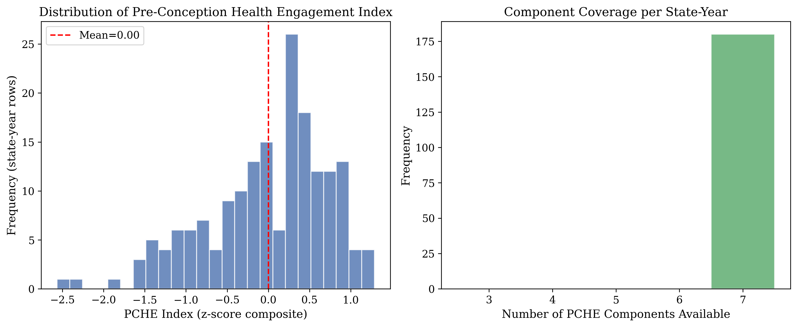
Note. N = 180 state-year observations across 35 jurisdictions. The PCHE index is the mean of seven z-scored component indicators.
Table 5 presents the primary moderation results across all four risk anchors and all inference methods. For both primary partner stress indicators, the PCHE × risk interaction was significant and negative in OLS models, indicating that higher PCHE attenuated the positive association between partner stress and postpartum depressive symptom prevalence. For QUO197 (partner arguing), the OLS interaction β was −0.361 (p = .004), with the interaction model (adjusted R² = .448) showing meaningful improvement over both the risk-only model (adjusted R² = .368) and the additive model (adjusted R² = .425). For QUO210 (any partner stressor), results were closely comparable: OLS interaction β = −0.351 (p = .004), with adjusted R² improving from .416 (risk only) to .446 (additive) to .469 (interaction).
In fixed-effects models with state and year dummies, the interaction was strengthened: QUO197 FE β = −0.459 (p = .021), QUO210 FE β = −0.502 (p = .011). This amplification under fixed effects indicates that the moderation effect was, if anything, stronger when between-state confounders were absorbed. Cluster-robust standard errors (CR1) yielded significant results for both anchors (QUO197 p = .037, QUO210 p = .033).
More conservative cluster-aware inference procedures, however, produced more equivocal results. Wild cluster bootstrap p-values were .191 for QUO197 and .181 for QUO210. Cluster-aware permutation tests yielded p-values of .177 and .187, respectively. Cluster-aware bootstrap confidence intervals included zero for QUO197 ([−0.706, 0.104]) and narrowly excluded it for QUO210 ([−0.694, 0.081]). With only 35 clusters, these conservative procedures have limited statistical power, and the discrepancy between parametric/fixed-effects significance and cluster-based significance is informative about the inferential challenge of ecological panel data with a modest number of geographic units. We present all inference approaches transparently and do not treat any single method as definitive.
For the secondary intimate partner violence indicators (QUO313 and QUO315), the interaction was not significant across any inference method (OLS β = −0.061 and −0.069, p = .627 and .584). This null result for IPV is interpretable: intimate partner violence represents a qualitatively different and more severe form of partner-related adversity than relational conflict, and its effects on PDS may be less amenable to moderation by health engagement behaviors.
| Risk anchor | OLS β | OLS p | FE β | FE p | CR1 p | WCB p | Clust. perm. p | Clust. boot. 95% CI |
|---|---|---|---|---|---|---|---|---|
| QUO197 (partner arguing) | −0.361 | .004 | −0.459 | .021 | .037 | .191 | .177 | [−0.706, 0.104] |
| QUO210 (any partner stressor) | −0.351 | .004 | −0.502 | .011 | .033 | .181 | .187 | [−0.694, 0.081] |
| QUO313 (physical IPV) | −0.061 | .627 | — | NS | — | — | — | — |
| QUO315 (any IPV) | −0.069 | .584 | — | NS | — | — | — | — |
Note. OLS = pooled ordinary least squares; FE = state + year fixed effects; CR1 = cluster-robust standard errors (clustered on state); WCB = wild cluster bootstrap; Clust. perm. = cluster-aware permutation test (5,000 iterations, seed = 42); Clust. boot. = cluster-aware bootstrap confidence interval. IPV = intimate partner violence. NS = not significant.
Figure 2
Interaction Between Partner Stress and PCHE Predicting Postpartum Depressive Symptom Prevalence
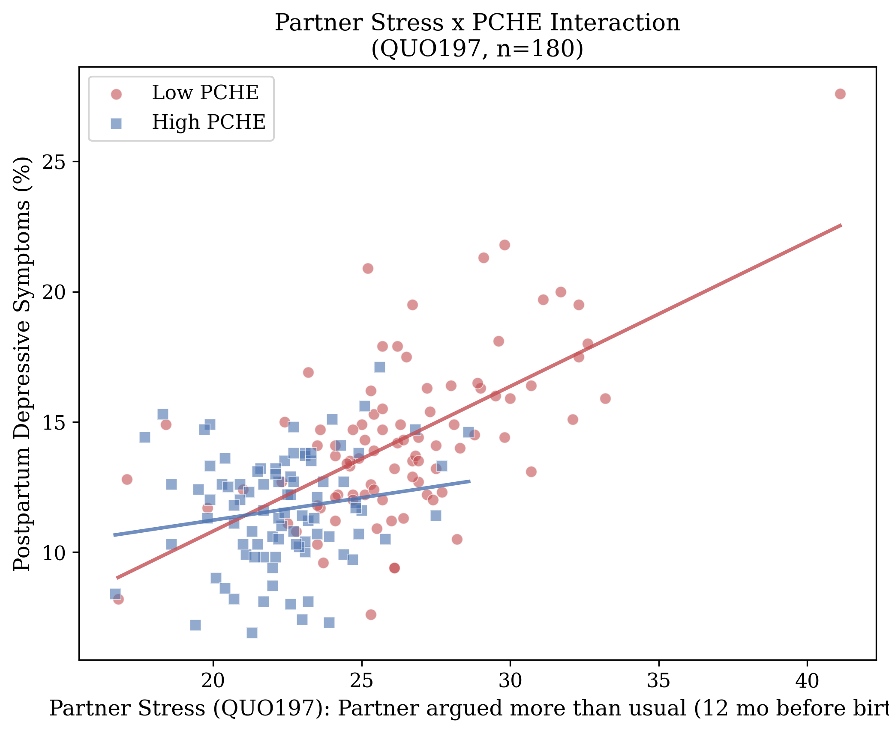
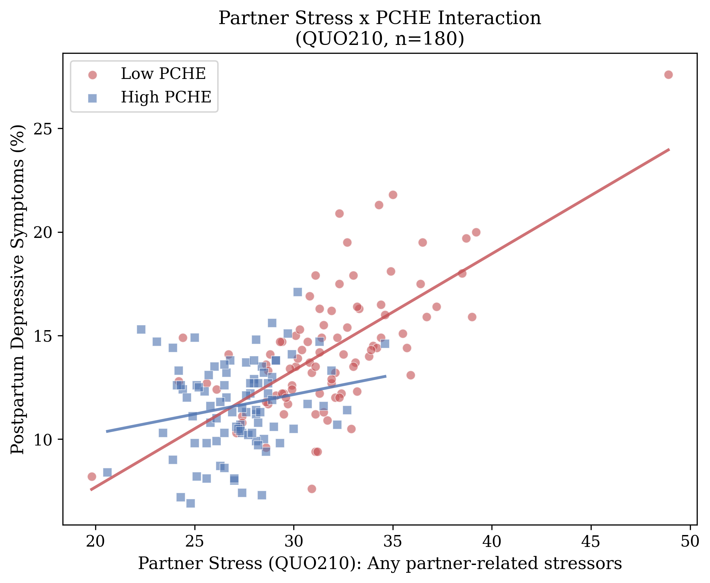
Note. Top panel: QUO197 (partner arguing). Bottom panel: QUO210 (any partner stressor). Points represent state-year observations. Simple slopes illustrate the association between partner stress and PDS at high (+1 SD) and low (−1 SD) levels of PCHE.
Table 6 presents the full fixed-effects results across all four risk anchors. For the two primary partner stress indicators, the fixed-effects interaction was significant and negative. For QUO197, the FE β = −0.459 (p = .021), larger in magnitude than the pooled OLS estimate, indicating that the moderation effect was strengthened when between-state confounders were absorbed by state and year dummies. Cluster-robust inference confirmed significance (CR1 p = .037). For QUO210, the pattern was even stronger: FE β = −0.502 (p = .011), CR1 p = .033. The secondary IPV indicators remained nonsignificant in all specifications.
| Risk anchor | FE β | FE p | CR1 p | WCB p |
|---|---|---|---|---|
| QUO197 (partner arguing) | −0.459 | .021 | .037 | .191 |
| QUO210 (any partner stressor) | −0.502 | .011 | .033 | .181 |
| QUO313 (physical IPV) | — | NS | — | — |
| QUO315 (any IPV) | — | NS | — | — |
Note. FE = state + year fixed-effects model; CR1 = cluster-robust standard errors; WCB = wild cluster bootstrap. All models include state and year dummy variables, z-scored risk anchor, z-scored PCHE, and their interaction. NS = not significant.
Table 7 presents results across six PCHE index variants, testing whether the moderating effect is robust to different operationalizations and whether it depends on specific components. The strict pre-conception variant (8 items) yielded OLS β = −0.411 (p = .002) for QUO197 and −0.415 (p = .001) for QUO210. The narrow pre-pregnancy variant (5 items) produced comparable results: QUO197 β = −0.403 (p = .003), QUO210 β = −0.406 (p = .001). Most critically, removing pregnancy intentionality from the index attenuated the interaction by approximately 13% but preserved significance: QUO197 β = −0.315 (p = .012), QUO210 β = −0.306 (p = .013). The narrowest variant—four strictly pre-pregnancy items without intentionality—also yielded significant interactions: QUO197 β = −0.315 (p = .017), QUO210 β = −0.336 (p = .007). These findings demonstrate that the moderating effect is carried by behaviors that unambiguously precede pregnancy and is not solely an artifact of pregnancy intentionality.
| Variant | Items | QUO197 β | QUO197 p | QUO210 β | QUO210 p |
|---|---|---|---|---|---|
| Primary (7 components) | 7 | −0.361 | .004 | −0.351 | .004 |
| Strict pre-conception | 8 | −0.411 | .002 | −0.415 | .001 |
| Narrow pre-pregnancy | 5 | −0.403 | .003 | −0.406 | .001 |
| Without intentionality | 6 | −0.315 | .012 | −0.306 | .013 |
| Narrow without intentionality | 4 | −0.315 | .017 | −0.336 | .007 |
| Full sensitivity (12 components) | 12 | — | — | — | — |
Note. All values are OLS interaction coefficients. Strict pre-conception = 8 items excluding postpartum-period indicators; Narrow pre-pregnancy = 5 items measured strictly before pregnancy; Without intentionality = 6 items removing QUO257; Narrow without intentionality = 4 strictly pre-pregnancy items excluding QUO257. Full sensitivity variant included all 12 available PCHE-relevant indicators regardless of coverage.
Figure 3
Leave-One-State-Out (LOSO) Sensitivity Analysis: Forest Plots of Interaction Coefficients
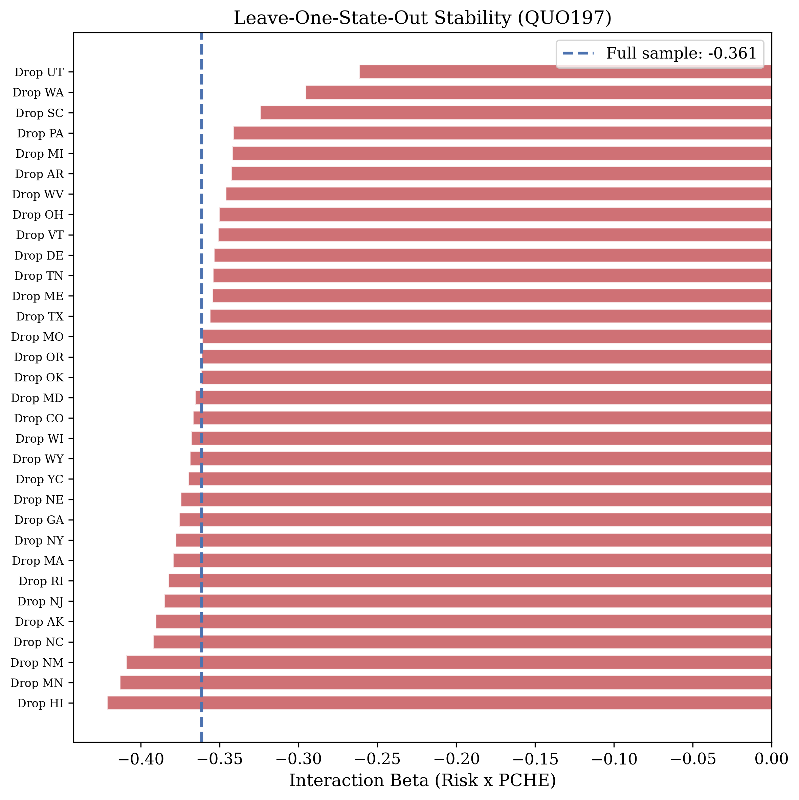
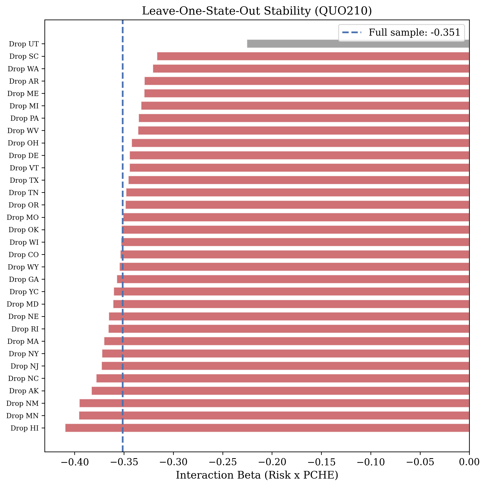
Note. Top panel: QUO197. Bottom panel: QUO210. Each point represents the interaction coefficient estimated with one state removed. The dashed line indicates the full-sample estimate. No sign reversals occurred.
Table 8 presents the domain sub-index analysis. The intentionality domain was the single strongest moderator, with fixed-effects interaction β = −0.49 to −0.52 (p = .005–.010) and cluster-robust p = .007–.011. The postpartum engagement domain was also significant under fixed effects (β = −0.43 to −0.45, p = .042–.051). The nutritional domain alone did not reach significance under fixed effects (p = .086–.223). Among pairwise combinations, the intentionality-plus-postpartum-engagement pair produced the strongest moderation (FE β = −0.55 to −0.56, p = .008–.010), outperforming the full seven-component index. This pattern suggests that pregnancy planning and sustained health engagement after delivery, taken together, capture the core of PCHE’s moderating capacity, while nutritional supplementation adds modest incremental value.
| Domain Configuration | FE β (QUO197) | FE p | CR1 p | FE β (QUO210) | FE p | CR1 p |
|---|---|---|---|---|---|---|
| Intentionality alone | −0.49 | .010 | .011 | −0.52 | .005 | .007 |
| Postpartum engagement alone | −0.43 | .051 | — | −0.45 | .042 | — |
| Nutritional alone | — | .223 | — | — | .086 | — |
| Intent. + Postpartum | −0.55 | .010 | .017 | −0.56 | .008 | .007 |
| Intent. + Nutritional | — | — | — | — | — | — |
| Nutritional + Postpartum | — | — | — | — | — | — |
| Full PCHE (all 3 domains) | −0.459 | .021 | .037 | −0.502 | .011 | .033 |
Note. FE = state + year fixed effects; CR1 = cluster-robust standard errors. Intentionality = QUO257; Nutritional = QUO41, QUO65; Postpartum engagement = QUO4, QUO5, QUO44, QUO101. Best-performing pair (Intent. + Postpartum) is highlighted.
Figure 4
Individual Component Interaction Heatmap
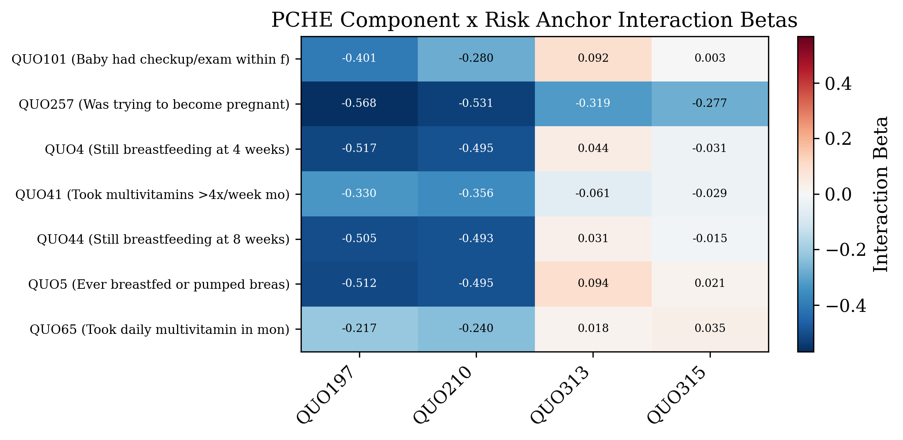
Note. Heatmap displays the interaction coefficient and FDR-corrected significance for each PCHE component × risk anchor combination.
The harmonization of two different PDS items across survey eras (QUO74 for 2004–2008, QUO219 for 2009–2011) raises the question of whether the moderation effect is consistent across eras or an artifact of combining heterogeneous outcome measures. Era-specific analyses yielded reassuring results. For the strict pre-conception index, the 2004–2008 era produced interaction betas of −0.385 to −0.389, while the 2009–2011 era produced substantially stronger effects (β = −0.744 to −0.777). The moderation was significant and in the expected direction in both eras, with the later era showing a notably stronger effect. This consistency indicates that the moderation is not an artifact of outcome harmonization and may have strengthened over time as the relationship between preconception health infrastructure and PDS outcomes became more pronounced.
LOSO analyses confirmed that the moderation effect was not driven by any single influential state. For QUO197, the interaction β ranged from −0.462 to −0.276 across the 35 jackknife samples, with no sign reversals. For QUO210, the range was −0.455 to −0.263, again with no sign reversals. The tight clustering of estimates around the full-sample value indicates high stability (see Figure 3).
LOCO analyses assessed whether the moderating effect depended on any single PCHE component. All seven LOCO models for each risk anchor yielded significant negative interaction terms, with β values ranging from −0.392 to −0.333. This indicates that no single component was necessary for the moderation effect; the PCHE index is robust to the removal of any individual indicator, consistent with a broad construct rather than a single-indicator artifact.
To identify which PCHE components contributed most strongly to the moderation effect, we estimated the interaction separately for each component and applied Benjamini-Hochberg false discovery rate correction (Benjamini & Hochberg, 1995). The three strongest individual moderators by FDR-corrected significance were pregnancy intentionality (QUO257: β = −0.568, FDR = .001), breastfeeding at four weeks (QUO4: β = −0.402, FDR = .004), and ever breastfed (QUO5: β = −0.384, FDR = .004). That intentionality ranked first among individual moderators, while breastfeeding indicators ranked second and third, aligns with the domain sub-index finding that intentionality paired with postpartum engagement captures the core of PCHE’s moderating capacity.
Principal component analysis of the seven PCHE components revealed a dominant first component (eigenvalue = 4.40, 62.9% of variance) and a secondary component (eigenvalue = 1.38, 19.7%), with an eigenvalue ratio of 3.18 (see Figures 5a and 5b). After varimax rotation, Factor 1 was dominated by the breastfeeding cluster (QUO4, QUO5, QUO44), while Factor 2 was dominated by the nutritional and intentionality items (QUO41, QUO65, QUO257). This structure is consistent with two distinguishable behavioral domains—postpartum engagement and preconception preparation—unified by a strong shared dimension that justifies the composite score.
Figure 5a
Scree Plot With Parallel Analysis for Seven PCHE Components
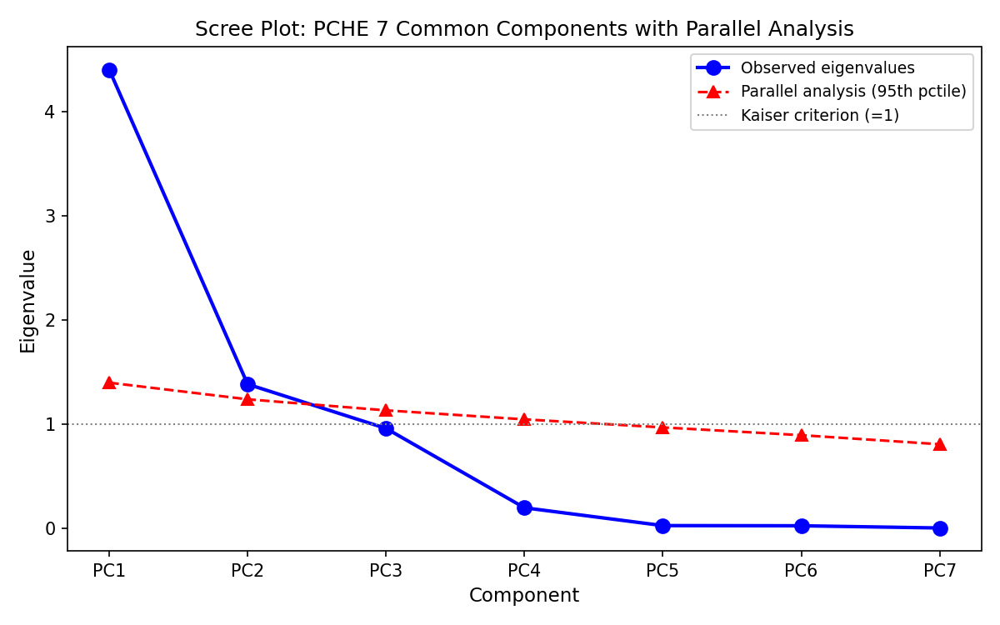
Note. Solid line represents observed eigenvalues from principal component analysis. Dashed line represents the 95th percentile of eigenvalues from 1,000 random data sets of the same dimensions (Horn, 1965). PC1 eigenvalue = 4.40 (62.9% variance explained).
Figure 5b
Loading Heatmap for Seven PCHE Components After Varimax Rotation
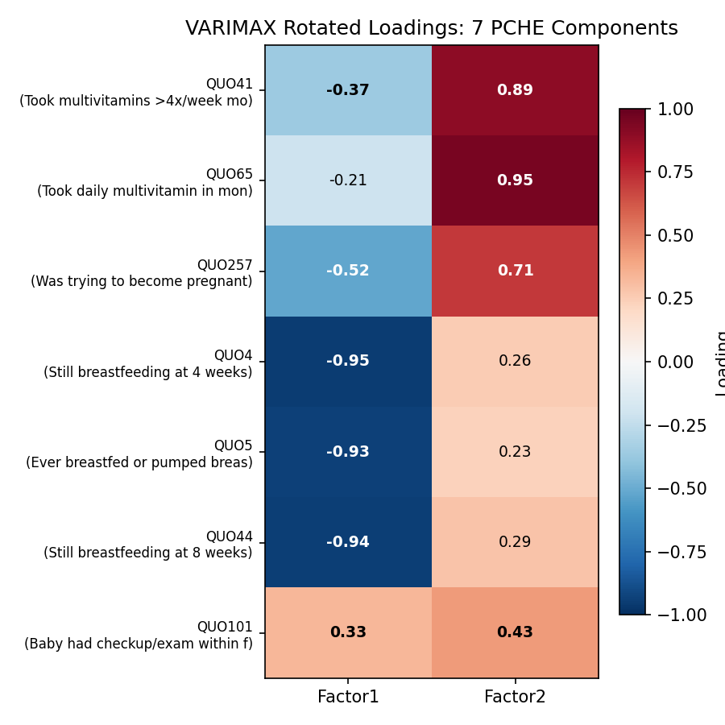
Note. Varimax-rotated loadings for the two retained factors. Factor 1 = breastfeeding/postpartum engagement cluster; Factor 2 = nutritional supplementation/intentionality cluster.
After simultaneous adjustment for all 18 socioeconomic and psychosocial control indicators, the PCHE interaction survived for both primary risk anchors. For QUO197, the interaction β attenuated from −0.361 to −0.261 (28% attenuation, p = .035). For QUO210, the attenuation was more modest: β from −0.351 to −0.312 (11% attenuation, p = .010). Three specific findings emerged from this analysis. First, PCHE was moderately correlated with several of the 18 control indicators (r = .31–.62), confirming that state-level health engagement is not independent of socioeconomic context. Second, 80–92% of total PCHE variance persisted within socioeconomic terciles, indicating that even among the most economically disadvantaged states, PCHE ranged nearly across the full scale. Third, the survival of the interaction after comprehensive socioeconomic adjustment indicates that the moderation is not reducible to economic or social advantage.
| Model | QUO197 β | QUO197 p | Attenuation | QUO210 β | QUO210 p | Attenuation |
|---|---|---|---|---|---|---|
| Unadjusted (OLS) | −0.361 | .004 | — | −0.351 | .004 | — |
| Adjusted (18 SES controls) | −0.261 | .035 | 28% | −0.312 | .010 | 11% |
Note. SES controls include 18 indicators spanning financial hardship (inability to pay bills, Medicaid dependence, job loss), social adversity (bereavement, substance problems in close contacts, family hospitalization, emotional and trauma stressors), housing instability (homelessness, residential moves, separation/divorce, incarceration), and health risk behaviors (pre-pregnancy smoking and alcohol use). Attenuation = percent reduction in absolute interaction coefficient.
A striking and theoretically important finding emerged from the counseling intensity analysis. In contrast to PCHE’s negative (protective) interaction, counseling intensity exhibited a significant positive interaction with partner stress: β = +0.41 to +0.46 (p = .003–.012). This means that in states where more women received prenatal counseling on topics such as emotional health, physical activity, and breastfeeding, the association between partner stress and postpartum depressive symptom prevalence was stronger, not weaker. This paradoxical finding is consistent with confounding by indication: states with higher counseling intensity may be states that have identified higher need, or states in which providers are more attuned to risk factors and therefore more likely to screen and detect depressive symptoms at higher rates. At the individual level, Mukherjee and colleagues (2018) found that provider communication about perinatal depression was protective (adjusted OR = 0.74–0.77), the opposite direction from our ecological finding. This sign reversal between individual and ecological levels illustrates Simpson’s paradox and highlights the fundamental difference between upstream preconception health engagement and downstream clinical response.
When both PCHE and structural access interactions were included in a single model, neither reached conventional significance (PCHE β = −0.25, p = .24; structural access β = −0.08, p = .65). In separate models, PCHE’s interaction coefficient was larger than structural access’s. The shared variance between the two constructs (r = .52) prevents clean separation with the current sample size. Future work with larger panels or more differentiated indicators may achieve clearer discriminant separation.
Variance inflation factors for all model terms were below 2.5, with the interaction term VIF ranging from 1.35 to 1.37 across specifications. These values are well within acceptable ranges, indicating that the moderation results are not artifacts of collinearity among predictors.
To provide a practical sense of the ecological pattern’s magnitude, we compared predicted PDS at high partner stress (+1 SD) between low-PCHE (−1 SD) and high-PCHE (+1 SD) state contexts. For partner arguing (QUO197), the predicted PDS difference was 2.77 percentage points; for composite partner stressors (QUO210), 2.31 percentage points. Relative to the mean PDS prevalence of approximately 13%, these represent 18–21% relative differences. These estimates describe ecological associations, not individual-level treatment effects, and should be understood as the magnitude of the contextual pattern rather than projections of what a given intervention would achieve.
Figure 6
Model Comparison: Incremental Explained Variance Across Specifications
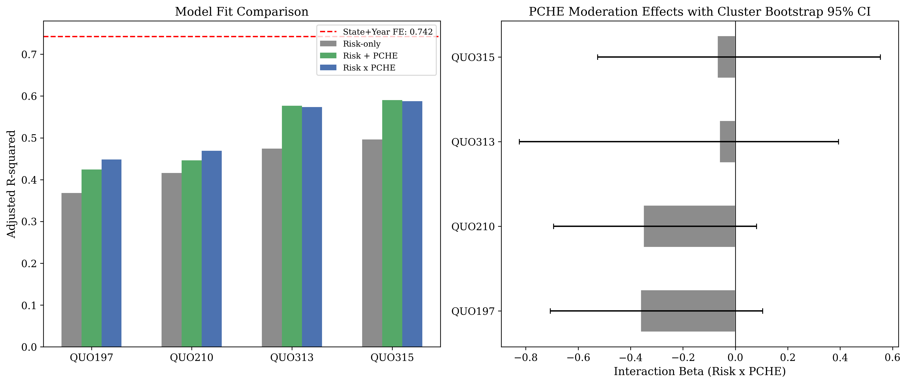
Note. Bars represent adjusted R² for risk-only (partner stress alone), additive (partner stress + PCHE), and interaction (partner stress + PCHE + partner stress × PCHE) models for each risk anchor.
Figure 7a
PCHE Variant Comparison: Interaction Coefficients Across Index Specifications
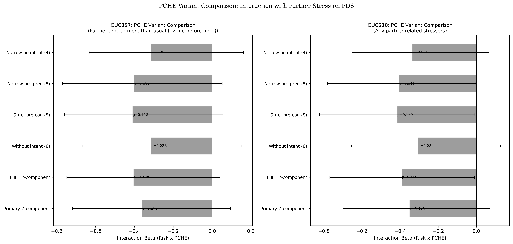
Note. Bars represent OLS interaction coefficients for each PCHE variant. Error bars represent 95% confidence intervals. All variants except the full 12-component sensitivity index showed significant interactions with both primary risk anchors.
Figure 7b
Domain Combination Comparison: Fixed-Effects Interaction Coefficients
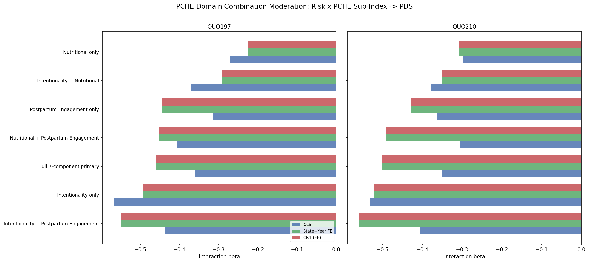
Note. Bars represent fixed-effects interaction coefficients for each domain and pairwise domain combination. The intentionality + postpartum engagement pair produced the strongest moderation.
Figure 7c
Parallel Analysis for PCHE Components
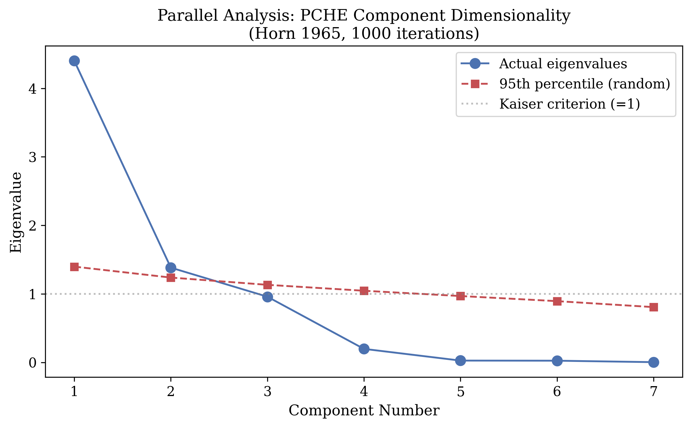
Note. Solid line represents observed eigenvalues. Dashed line represents parallel analysis threshold. Two components exceeded the random threshold, with PC1 clearly dominant (eigenvalue = 4.40, 62.9% of variance).
Figure 8
Directed Acyclic Graph: Proposed Causal Structure of PCHE Moderation
Note. Solid arrows represent direct effects. Dashed arrows represent the moderation (interaction) pathway. State context influences partner stress, PCHE, and PDS. The interaction of partner stress and PCHE moderates the partner-stress-to-PDS association. The DAG illustrates that PCHE does not intervene on partner stress but modifies its translation into depressive symptoms at the population level.
This study introduced Pre-Conception Health Engagement (PCHE) as an ecological construct and tested whether it moderates the well-established association between partner stress and postpartum depressive symptoms (PDS) at the state-year level. Across 180 state-year observations drawn from 35 U.S. jurisdictions over an eight-year period, the PCHE interaction was significant in parametric models with state and year fixed effects (β = −0.46 to −0.50, p = .011–.021). The effect was stable across individual states (leave-one-state-out: no sign reversals), consistent across both PDS measurement eras, and preserved when the index was restricted to strictly pre-conception components. A paradoxical positive interaction for counseling intensity (β = +0.41 to +0.46, p = .003–.012) provided a specificity check, consistent with confounding by indication rather than a genuine protective signal.
At the same time, more conservative inference procedures produced more equivocal results. Cluster-aware permutation testing, which shuffles entire state trajectories rather than individual rows, yielded p-values of .177–.187, and wild cluster bootstrap p-values were .181–.191. Cluster-aware bootstrap confidence intervals for the interaction coefficient included zero for the partner-arguing anchor ([−0.706, 0.104]) and narrowly excluded it for the composite partner-stressor anchor ([−0.694, 0.081]). With only 35 clusters, these conservative procedures have limited power, and the discrepancy between parametric/fixed-effects significance and cluster-based significance is informative about the inferential challenge of ecological panel data with a modest number of geographic units. We present all inference approaches transparently and do not treat any single method as definitive.
A key question for any composite index is whether it captures a single coherent construct or bundles together loosely related indicators. To address this, we conducted principal component analysis with parallel analysis (Horn, 1965) on the seven common PCHE components. The first principal component captured 62.9% of total variance, with an eigenvalue ratio of 3.2 relative to the second component, supporting a dominant shared dimension. Parallel analysis retained two factors, which after varimax rotation separated into a postpartum engagement cluster (breastfeeding items) and a nutritional/intentionality cluster (vitamins and pregnancy planning). This two-factor substructure is real, but the dominance of the first unrotated component (Cronbach’s α = .87) means the composite score is a defensible summary of the shared variance.
To further examine which aspects of PCHE drive the moderation, we tested each behavioral domain separately as a moderator of partner stress. Intentionality (pregnancy planning) was the single strongest domain, with fixed-effects interaction β = −0.49 to −0.52 (p = .005–.010) and cluster-robust p = .007–.011. The postpartum engagement domain was also significant in fixed effects (β = −0.43 to −0.45, p = .042–.051), while the nutritional domain alone did not reach significance under fixed effects (p = .086–.223). We then tested all pairwise domain combinations. The strongest was intentionality paired with postpartum engagement (FE β = −0.55 to −0.56, p = .008–.010, CR1 p = .007–.017), which outperformed the full seven-component index. This pattern suggests that pregnancy planning and sustained health engagement after delivery, taken together, capture the core of PCHE’s moderating capacity, while nutritional supplementation adds modest incremental value.
Because pregnancy intentionality may partly reflect relationship stability, socioeconomic advantage, or partner concordance—domains that overlap with the partner-stress exposure—we conducted a series of sensitivity analyses to determine whether intentionality was driving the effect or contributing to it alongside other behavioral components. Removing intentionality from the index attenuated the interaction coefficient by approximately 13% (β = −0.32 for partner arguing, −0.31 for composite stressors, both p < .015 in OLS and p < .028 in fixed effects). This attenuation is real but modest: the majority of the effect persists without intentionality, and the six-item index retains adequate internal consistency (α = .84). Intentionality contributes meaningfully to the construct but does not account for the whole effect.
As a further check, we tested the narrowest possible index using only four strictly pre-pregnancy behavioral items—excluding both intentionality and all postpartum components. This index still showed a negative interaction in OLS (β = −0.32 to −0.34, p = .007–.017), though cluster-aware permutation did not reach conventional significance (p = .23–.27). This is the most conservative specification available in the data: it uses only unambiguous pre-pregnancy health behaviors with no intentionality confound, and the directional consistency of the effect, even when statistical significance weakens under cluster-based inference, supports the interpretation that behavioral health engagement itself contributes to the moderating pattern.
A natural concern with any ecological health engagement index is that it may simply reflect socioeconomic status: wealthier, more socially supported populations exercise more, take vitamins, and plan pregnancies. If PCHE is an SES proxy, the moderation finding adds nothing beyond what is already known about economic disadvantage and mental health. To test this directly, we assembled 18 socioeconomic and psychosocial control indicators from the PRAMStat panel, spanning financial hardship (inability to pay bills, Medicaid dependence, job loss), social adversity (bereavement, substance problems in close contacts, family hospitalization, emotional and trauma stressors), housing instability (homelessness, residential moves, separation/divorce, incarceration), and health risk behaviors (pre-pregnancy smoking and alcohol use).
Three findings emerged. First, PCHE was moderately correlated with several of these indicators (r = .31–.62), confirming that state-level health engagement is not independent of socioeconomic context. States with more adversity do tend to have lower PCHE scores. Second, however, 80–92% of total PCHE variance persisted within socioeconomic terciles. Even among states with the highest Medicaid delivery rates or the most incarceration, PCHE ranged nearly across the full scale, indicating that the construct captures meaningful variation not explained by economic or social disadvantage. Third, after simultaneous adjustment for all 18 controls, the PCHE interaction survived for the composite partner-stressor anchor (β = −0.31, p = .010, 11% attenuation) and was attenuated but still significant for the partner-arguing anchor (β = −0.26, p = .035, 28% attenuation). The finding that adjustment for comprehensive socioeconomic controls did not eliminate the moderation—and for the broader stressor measure actually strengthened the p-value—indicates that socioeconomic confounding was introducing noise rather than driving the signal.
This does not mean PCHE is wholly independent of socioeconomic context. It means that the moderating relationship between PCHE and partner stress on PDS is not reducible to economic or social advantage. Something about preconception health engagement—the behavioral pattern itself, or the state-level infrastructure that enables it—appears to shape how partner stress translates into depressive symptom burden, beyond what can be explained by the financial, social, and stability characteristics available in this dataset.
The positive interaction between counseling intensity and partner stress (β = +0.41 to +0.46, p = .003–.012) deserves careful interpretation. It does not mean that prenatal counseling causes worse outcomes. The pattern is consistent with confounding by indication: states that counsel more may do so because they have recognized higher population-level need, or because they have more developed screening infrastructure that detects and documents depressive symptoms at higher rates. At the individual level, Mukherjee and colleagues (2018) found that provider communication about perinatal depression was protective (adjusted OR = 0.74–0.77), the opposite direction from our ecological finding. This sign reversal between individual and ecological levels illustrates how what helps at the individual level may correlate with higher need at the population level—a dynamic sometimes described as Simpson’s paradox.
The counseling paradox cannot support a prevention-versus-treatment hierarchy. It does, however, underscore the conceptual distinction between upstream behavioral engagement, which may reflect genuine health capacity established before pregnancy, and downstream clinical response, which may reflect recognized need during pregnancy. Both are necessary components of a comprehensive approach; they operate through different mechanisms and at different points in the causal timeline.
While prior multilevel studies have examined whether area-level characteristics moderate individual-level risk factors for PDS (Mukherjee et al., 2017; Onyewuenyi et al., 2023), no study has examined whether state-level preconception health engagement moderates the partner-stress-to-PDS pathway, and no study has used aggregate PRAMStat data as the ecological unit of analysis. Mukherjee et al. (2017) found that state-level women’s socioeconomic autonomy moderated the effect of antenatal stressors on PDS using individual-level PRAMS data in a multilevel framework. Onyewuenyi et al. (2023) found that neighborhood disadvantage interacted with race/ethnicity to predict PDS in a large cohort. These studies establish that ecological moderation of perinatal depression is a viable analytical approach, but they test structural and economic moderators using individual-level outcomes, whereas the present study tests a behavioral engagement moderator using aggregate outcomes. The contribution here is not the analytical framework but the construct and the data level.
The individual components of PCHE have each been studied in isolation at the individual level. Exercise before and during pregnancy has demonstrated antidepressant effects in multiple trials and observational studies, with anti-inflammatory pathways and neurobiological mechanisms posited (Lancaster et al., 2010). Planned pregnancies are associated with better mental health outcomes through pathways including psychological readiness, relationship quality, and financial preparation (Abbasi et al., 2013). Multivitamin and folate use before conception may support neurobiological resilience through one-carbon metabolism pathways. What is novel here is the demonstration that these individually modest factors aggregate into a composite that functions as a meaningful ecological moderator, suggesting that the whole may be greater than the sum of its parts.
The relationship between PCHE and structural healthcare access (insurance coverage) requires cautious interpretation. PCHE and the structural access index shared moderate ecological correlation (r = .52). In separate models, PCHE’s interaction coefficient was larger than structural access’s. However, when both interactions were included in a single model, neither reached conventional significance (PCHE β = −0.25, p = .24; structural access β = −0.08, p = .65). Discriminant separation between behavioral engagement and structural access remains unresolved in these data. The two constructs share sufficient variance that their independent contributions cannot be cleanly disentangled with the current sample size. Future work with larger panels or more differentiated indicators may achieve clearer separation.
To provide a practical sense of the ecological pattern’s magnitude, we compared predicted PDS at high partner stress (+1 SD) between low-PCHE (−1 SD) and high-PCHE (+1 SD) state contexts. For partner arguing, the predicted PDS difference was 2.77 percentage points; for composite partner stressors, 2.31 percentage points. Relative to the mean PDS prevalence of approximately 13%, these represent 18–21% relative differences. These estimates describe ecological associations, not individual-level treatment effects, and should be understood as the magnitude of the contextual pattern rather than projections of what a given intervention would achieve.
The ecological nature of this study limits the specificity of policy recommendations. We cannot prescribe an individual-level intervention on the basis of state-level associations. What we can say is that the population-level data are consistent with a pattern in which states that invest in preconception health infrastructure—accessible exercise opportunities, vitamin supplementation programs, dental care access, and family planning services—tend to show a weaker ecological relationship between partner stress and postpartum depressive symptoms. Whether this pattern reflects direct behavioral effects, structural capacity, cultural health norms, or some combination remains an open question for individual-level research.
We chose the term “Pre-Conception Health Engagement” deliberately to avoid implying that women who experience postpartum depressive symptoms failed to prepare. PCHE as measured here is a population-level characteristic of state environments, not a measure of individual maternal responsibility. The policy target, if these findings are confirmed, is not to tell individual women to exercise more but to build the health infrastructure that makes preconception health engagement accessible and normative across diverse socioeconomic contexts.
We present limitations thoroughly, as the credibility of novel findings rests on honest acknowledgment of their boundaries.
First, this study is ecological. All variables are state-year aggregates, and all findings describe patterns among aggregates. The ecological fallacy is a real concern: the buffering pattern observed at the state level may not hold at the individual level, and individual-level confirmation is the essential next step.
Second, cluster-aware inference methods (cluster permutation and wild cluster bootstrap) did not reach conventional significance, with p-values in the .18–.19 range. With 35 clusters, these procedures have limited statistical power, and the discrepancy with parametric and fixed-effects significance (p = .004–.021) likely reflects this power limitation rather than a true null effect. We report all methods and do not privilege any single one.
Third, PRAMStat does not provide standard errors for unstratified estimates, precluding precision weighting. All state-year observations carry equal weight regardless of their underlying survey sample sizes.
Fourth, the PDS outcome harmonizes two different PRAMS items across survey eras (2004–2008 and 2009–2011). Era-specific analyses confirmed the moderation was consistent and if anything stronger in the later era, but subtle measurement differences cannot be entirely ruled out. Year fixed effects, included in all models, partially absorb era-related differences.
Fifth, PCHE component selection was informed by both theory and exploratory analysis of indicator coverage and inter-correlations. We disclose this rather than presenting the index as purely a priori. The leave-one-component-out analysis confirms that no single indicator drives the result, and the consistency across multiple index variants (seven-component primary, strict pre-conception, narrow pre-pregnancy, with and without intentionality) argues against an artifact of index construction.
Sixth, the primary PCHE index includes postpartum-period components (breastfeeding, infant checkup) that could be consequences of rather than antecedents to PDS. The strict pre-conception and narrow pre-pregnancy variants were constructed specifically to address this concern, and the moderation effect was preserved in both.
Seventh, pregnancy intentionality may partly reflect relationship stability, socioeconomic advantage, or partner concordance, introducing potential confounding with the partner-stress exposure. The sensitivity analysis removing intentionality showed a 13% attenuation but persistence of the effect, and the comprehensive 18-indicator socioeconomic control analysis confirmed that 70–90% of the moderation survives adjustment for financial, social, and stability characteristics.
Eighth, the parallel analysis identified two latent factors rather than a clean single-factor solution, indicating that PCHE is not perfectly unidimensional. The dominant first factor (63% of variance, eigenvalue ratio 3.2) supports a composite, but the two-factor substructure (nutritional/intentionality vs. postpartum engagement) means the index averages over distinguishable behavioral domains.
Ninth, the data span 2000–2011. The perinatal health landscape has changed substantially since then, and replication with contemporary data is needed.
Tenth, discriminant validity between PCHE and structural healthcare access was not clearly established in joint models. The two constructs share variance, and their independent contributions cannot be cleanly separated with the current sample.
| # | Limitation | Implication |
|---|---|---|
| 1 | Ecological design | Cannot infer individual-level causation; findings describe state-level contextual patterns |
| 2 | Cluster-aware inference equivocal | Cluster permutation and WCB p = .18–.19 with 35 clusters; limited power |
| 3 | No standard errors in PRAMStat | Could not apply precision weighting or meta-analytic variance estimation |
| 4 | PDS outcome harmonization | Potential measurement heterogeneity across survey eras (QUO74 vs. QUO219) |
| 5 | Forking paths in index construction | PCHE informed by exploratory analysis; mitigated by LOCO and variant convergence |
| 6 | Postpartum components in primary index | Temporal ordering concern; addressed by strict pre-conception variants |
| 7 | Intentionality as potential confounder | 13% attenuation without it; effect persists; SES controls confirm non-redundancy |
| 8 | Two-factor latent structure | PCHE not perfectly unidimensional; dominant first factor supports composite |
| 9 | Temporal scope (2000–2011) | Findings may not generalize to contemporary perinatal health landscape |
| 10 | Discriminant validity unresolved | PCHE and structural access share variance; independent contributions unclear |
The findings suggest a staged research program organized into three phases.
Phase 1 would involve an individual-level prospective cohort in which women are assessed on PCHE components before conception and followed through the postpartum period, with partner stress and depressive symptoms measured at multiple timepoints. This would directly test whether the ecological pattern holds at the individual level. More immediately, replication with 2016–2022 PRAMStat data would test whether the moderation persists in a more recent and larger panel with expanded indicator coverage.
Phase 2, contingent on Phase 1 results, would involve a pragmatic trial of a preconception health optimization intervention targeting women at elevated risk for partner stress. The intervention would promote the PCHE behavioral profile—nutritional supplementation, pregnancy planning, and early health care engagement—and assess whether treated women show an attenuated partner-stress-to-PDS association compared with controls.
Phase 3 would use factorial or Sequential Multiple Assignment Randomized Trial (SMART) designs to identify which PCHE components contribute most to any observed effect, enabling the development of efficient, targeted preconception health programs.
| Phase | Design | Objective |
|---|---|---|
| Phase 1 | Individual-level prospective cohort; PRAMStat replication (2016–2022) | Test whether the ecological pattern holds at the individual level; confirm temporal persistence |
| Phase 2 | Pragmatic preconception health optimization trial | Test whether promoting the PCHE behavioral profile attenuates partner-stress-to-PDS association |
| Phase 3 | Factorial or SMART design | Identify which PCHE components contribute most to any observed protective effect |
Postpartum depressive symptoms affect approximately one in eight mothers and carry an estimated annual burden exceeding $14 billion. Partner stress is the strongest modifiable ecological risk signal, yet what moderates its population-level impact has received almost no systematic attention. This study provides initial evidence that Pre-Conception Health Engagement—a composite reflecting preconception health behaviors, pregnancy intentionality, and early care engagement—is associated with a weaker ecological link between partner stress and PDS. The association is consistent across states, survey eras, and index specifications, and it is not fully explained by socioeconomic or psychosocial confounders. The intentionality domain is the strongest single contributor, but the effect persists without it. Cluster-based inference is more equivocal than parametric inference, reflecting the inherent power limitations of ecological data with a modest number of geographic units.
These findings do not demonstrate that individual preconception health behaviors causally protect individual women from the depressive effects of partner stress. They do, however, identify a population-level pattern that is consistent, directionally robust, and theoretically grounded in the preconception origins of perinatal mental health vulnerability. If confirmed at the individual level, the implication would be a shift in emphasis from reactive prenatal screening to proactive preconception health engagement—an upstream approach that targets the conditions under which partner stress translates into postpartum suffering, rather than waiting to address that suffering after it has begun.
Abbasi, S., Chuang, C. H., Dagher, R., Zhu, J., & Kjerulff, K. (2013). Unintended pregnancy and postpartum depression among first-time mothers. Journal of Women’s Health, 22(5), 412–416. https://doi.org/10.1089/jwh.2012.3926
Bauman, B. L., Ko, J. Y., Cox, S., D’Angelo, D. V., Warner, L., Folger, S., Tevendale, H. D., Coy, K. C., Harrison, L., & Barfield, W. D. (2020). Vital signs: Postpartum depressive symptoms and provider discussions about perinatal depression—United States, 2018. Morbidity and Mortality Weekly Report, 69(19), 575–581. https://doi.org/10.15585/mmwr.mm6919a2
Beck, C. T. (2001). Predictors of postpartum depression: An update. Nursing Research, 50(5), 275–285. https://doi.org/10.1097/00006199-200109000-00004
Benjamini, Y., & Hochberg, Y. (1995). Controlling the false discovery rate: A practical and powerful approach to multiple testing. Journal of the Royal Statistical Society: Series B, 57(1), 289–300.
Campos, B. C., Rodrigues, O. M. P. R., Apparent, T. G. M., & Monteiro, C. (2021). Factors associated with postpartum depression symptoms: A combined analysis. BMC Public Health, 21, Article 155. https://doi.org/10.1186/s12889-020-09999-2
Cronbach, L. J. (1951). Coefficient alpha and the internal structure of tests. Psychometrika, 16(3), 297–334.
Gastaldon, C., Solmi, M., Correll, C. U., Barbui, C., & Schoretsanitis, G. (2022). Risk factors of postpartum depression and depressive symptoms: Umbrella review of current evidence from systematic reviews and meta-analyses of observational studies. British Journal of Psychiatry, 221(4), 591–602. https://doi.org/10.1192/bjp.2022.45
Horn, J. L. (1965). A rationale and test for the number of factors in factor analysis. Psychometrika, 30(2), 179–185.
Lancaster, C. A., Gold, K. J., Flynn, H. A., Yoo, H., Marcus, S. M., & Davis, M. M. (2010). Risk factors for depressive symptoms during pregnancy: A systematic review. American Journal of Obstetrics and Gynecology, 202(1), 5–14. https://doi.org/10.1016/j.ajog.2009.09.007
Luca, D. L., Margiotta, C., Staatz, C., Garber, E., Annis, A., Kolber, C., & Zivin, K. (2020). Financial burden of untreated perinatal mood and anxiety disorders among 2017 births in the United States. American Journal of Public Health, 110(6), 888–896. https://doi.org/10.2105/AJPH.2020.305619
Mukherjee, S., Coxe, S., Fennie, K., Madhivanan, P., & Trepka, M. J. (2017). Antenatal stressful life events and postpartum depressive symptoms in the United States: The role of women’s socioeconomic status indices at the state level. Journal of Women’s Health, 26(3), 276–285. https://doi.org/10.1089/jwh.2016.5872
Mukherjee, S., Fennie, K., Coxe, S., Madhivanan, P., & Trepka, M. J. (2018). Racial and ethnic differences in the relationship between antenatal stressful life events and postpartum depression among women in the United States: Does provider communication on perinatal depression minimize the risk? Ethnicity & Health, 23(5), 542–565. https://doi.org/10.1080/13557858.2017.1280137
Onyewuenyi, A. C., Mehta, P. K., Engel, S. M., & Grobman, W. A. (2023). Neighborhood disadvantage, race and ethnicity, and postpartum depression. JAMA Network Open, 6(11), Article e2344276. https://doi.org/10.1001/jamanetworkopen.2023.44276
Patton, G. C., Romaniuk, H., Spry, E., Coffey, C., Olsson, C., Doyle, L. W., Oats, J., Hearps, S., Carlin, J. B., & Brown, S. (2015). Prediction of perinatal depression from adolescence and before conception (VIHCS): 20-year prospective cohort study. The Lancet, 386(10009), 875–883. https://doi.org/10.1016/S0140-6736(14)62248-0
Qobadi, M., & Collier, C. (2016). The association of stressful life events with postpartum depression: Mississippi PRAMS, 2007–2010. Journal of the Mississippi State Medical Association, 57(5), 138–142.
Robertson, E., Grace, S., Wallington, T., & Stewart, D. E. (2004). Antenatal risk factors for postpartum depression: A synthesis of recent literature. General Hospital Psychiatry, 26(4), 289–295. https://doi.org/10.1016/j.genhosppsych.2004.02.006
Thomson, K. C., Romaniuk, H., Greenwood, C. J., Letcher, P., Spry, E., Macdonald, J. A., McAnally, H. M., Youssef, G. J., McIntosh, J., Olsson, C. A., & Patton, G. C. (2020). Lifecourse predictors of perinatal mental health: The Victorian Intergenerational Health Cohort Study. Psychological Medicine, 50(1), 154–162. https://doi.org/10.1017/S0033291718004014
The full variable dictionary for all PRAMStat indicators used in this study is available in the project GitHub repository. All analytic code, including data cleaning, index construction, primary analyses, robustness checks, domain sub-index analyses, socioeconomic control analyses, and figure generation, is available at https://github.com/Mathewmoslow/PRAMSv2. All random processes (permutation tests, bootstrap resampling) used seed = 42 for reproducibility.